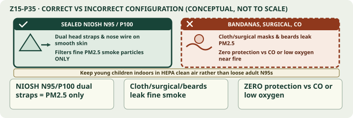

Z15-P35 · Disaster scenarios · New manuscript
Respect NIOSH N95/P100 particulate respirator limits in wildfire smoke
Use respiratory protection accurately for essential outdoor wildfire-smoke tasks without trusting masks against gases or unsealed fits.
When it applies · Essential brief outdoor tasks during Unhealthy or Hazardous wildfire smoke when staying indoors is impossible.
Equipment · Properly fitted NIOSH-approved N95 or P100 particulate respirator (two head straps, moldable nose wire).

Actions
- Verify the respirator is stamped NIOSH N95 or P100 with dual head straps (not loose single-loop dust masks, surgical masks, cloth gaiters, or bandanas, which leak fine PM2.5 smoke freely around the cheeks and nose).[D06, C19]
- Seal the nose clip and dual straps cleanly against smooth skin (heavy facial hair breaks the seal sharply, and standard adult N95s do NOT fit young children—keep children indoors in clean HEPA air instead).[D06]
- Remember critical respirator boundaries: an N95/P100 filters solid fine smoke particles ONLY—it offers ZERO protection against carbon monoxide, toxic chemical vapors, or oxygen-deficient air near active flames; individuals with heart or lung disease should ask their clinician before prolonged respirator use.[D06, C05]
Failure recognition · Wearing a damp cloth bandana or loose surgical mask while clearing storm brush in heavy wildfire smoke near active glowing ash.[D06, C19]
Verify · Confirm NIOSH N95/P100 stamp, snug dual-strap seal, children kept in indoor HEPA air, and zero reliance near active flames/CO.[D06, D07]
Stop or change course · Dizziness, labored breathing inside a mask, or proximity to active flames/chemical fumes requires moving immediately indoors to clean air or evacuating.[D06, C19]
Evidence and editorial notes
- C05 · CPSC · Portable Heaters and Camping Equipment (current web edition)
- Section: Carbon monoxide poisoning from portable camping equipment · Conditions: Tents, campers, vehicles and other enclosed spaces
Support: Fuel-burning camping equipment can lead to fatal carbon monoxide buildup in enclosed spaces.
Limitations: High altitude increases incomplete combustion and CO production. · Conflicting evidence: None; aligns with CDC-CO and NPS guidance.
Editorial note: Hard-stop prohibition against indoor/vestibule/tent combustion. · Specialist reviewer: Carbon monoxide safety and emergency medicine
Primary source · checked 2026-11-24 - C19 · FEMA / Ready.gov · Wildfires (current web edition)
- Section: Wildfires > Stay Safe and Smoke Protection · Conditions: Approaching wildfire or heavy smoke in camp or community
Support: Evacuate early along open routes per official orders, protect airways from heavy smoke, and avoid turning back into active fire corridors.
Limitations: Cloth face coverings do not filter fine wildfire smoke particles; fitted particulate respirators or clean indoor air are distinct interventions. · Conflicting evidence: None; coordinates with NWS-WILDFIRE.
Editorial note: Covers wildfire escape and smoke decision thresholds in Z01/Z03. · Specialist reviewer: Emergency management and fire safety
Primary source · checked 2026-11-24 - D06 · US EPA / AirNow · Wildfires and Air Quality (current web edition)
- Section: Wildfires and Air Quality > AQI Categories and Exposure Reduction · Conditions: Regional or local wildfire smoke plumes impacting air quality
Support: Monitor live official AirNow AQI readings and local health advisories; move indoors with windows/doors closed during Unhealthy AQI levels, limit heavy exertion, and use properly fitted NIOSH-approved N95/P100 particulate respirators if essential outdoor exposure cannot be avoided.
Limitations: Surgical masks, bandanas, and dust masks do not seal against fine PM2.5 wildfire smoke particles; N95s do not protect against carbon monoxide or low oxygen. · Conflicting evidence: None; complements C19 and READY-WILDFIRE.
Editorial note: Grounds AQI smoke thresholds and respiratory protection limits in Z15. · Specialist reviewer: Environmental health and air-quality specialist
Primary source · checked 2026-11-24 - D07 · US EPA · Create a Clean Room to Protect Indoor Air Quality During a Wildfire (current web edition)
- Section: Create a Clean Room > Indoor Filtration and Recirculation Setup · Conditions: Households sheltering indoors during multi-day wildfire smoke events
Support: Designate an interior room with few doors/windows, run a properly sized portable HEPA air cleaner (avoiding ozone generators) or set HVAC to recirculate with a MERV-13 filter if system-compatible, and avoid indoor combustion (candles, gas stoves, vacuuming without HEPA) that adds particulates.
Limitations: During simultaneous extreme heat and smoke, cooling takes priority if indoor temperatures become dangerous—relocate to a public clean-air cooling center. · Conflicting evidence: None; addresses compound smoke-plus-heat emergencies.
Editorial note: Core indoor clean-room assembly and compound-hazard card evidence. · Specialist reviewer: Indoor air quality and public health
Primary source · checked 2026-11-24
Current assessment · A04-D07 (2026-11-25) · Bounded support confirmed from an alternate source (A04): EPA supports clean-room particle control, a correctly sized low-ozone cleaner and compatible HVAC filtration. Limit to wildfire smoke and safe temperature; flood page was unrelated. Combustion, candle use and vacuuming are distinct particle sources. Limits: Specialist review PENDING (Indoor air quality and public health); publication HOLD. All release decisions pending.
Source lineage · US EPA AirNow Wildfires; new manuscript · Classification · New manuscript.